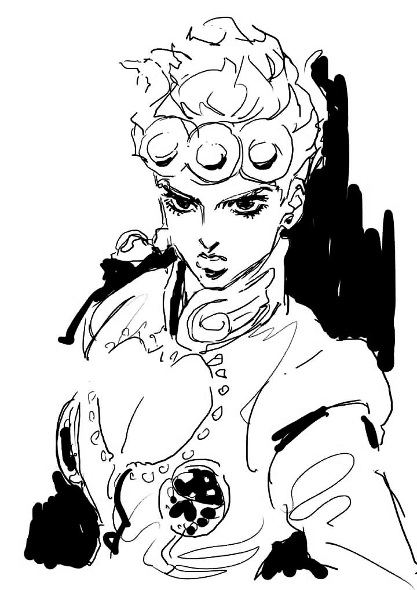

The catalogue


Designs drawn for skin, pinned up the way a parlour sheet is. Claim a number and it comes off the sheet for good. Sizing is a starting point, your artist adjusts to fit.
Quotes and placement are worked out with your artist. Bring the number.
Art
(いきがい) noun
a reason for being. Original drawings, printed once and signed by hand, the thing that gets us up in the morning. Scroll the wall.
No factories, no reprints. Just the steps between an idea and a shirt.
Every motif starts as a sketch pulled from what we can't stop thinking about.
Each shirt is screen printed by hand, one at a time, no shortcuts.
A design prints in a single small batch and is never repeated.
Once a run sells out, it's retired. What's left is what's left.